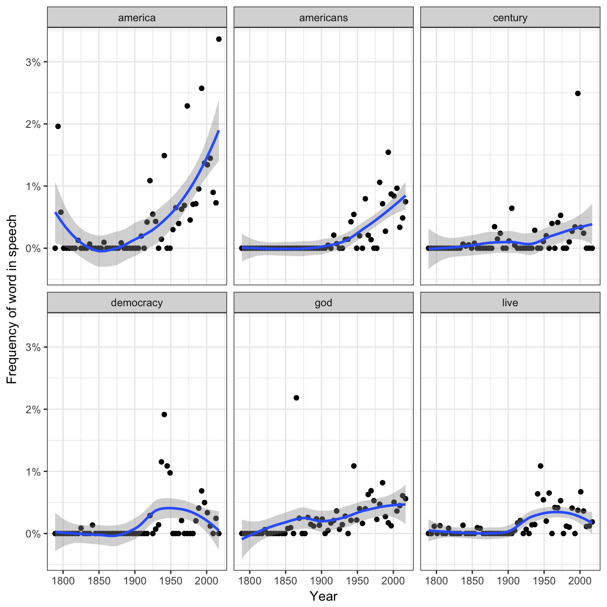

Many existing text mining datasets are in the form of a DocumentTermMatrix class (from the tm package). For example, consider the corpus of 2246 Associated Press articles from the topicmodels package:
library(tm)
data("AssociatedPress", package = "topicmodels")
AssociatedPress## <<DocumentTermMatrix (documents: 2246, terms: 10473)>>
## Non-/sparse entries: 302031/23220327
## Sparsity : 99%
## Maximal term length: 18
## Weighting : term frequency (tf)If we want to analyze this with tidy tools, we need to turn it into a one-term-per-document-per-row data frame first. The tidy function does this. (For more on the tidy verb, see the broom package).
library(dplyr)
library(tidytext)
ap_td <- tidy(AssociatedPress)Just as shown in this vignette, having the text in this format is convenient for analysis with the tidytext package. For example, you can perform sentiment analysis on these newspaper articles.
ap_sentiments <- ap_td %>%
inner_join(get_sentiments("bing"), by = c(term = "word"))
ap_sentiments## # A tibble: 30,094 x 4
## document term count sentiment
## <int> <chr> <dbl> <chr>
## 1 1 assault 1. negative
## 2 1 complex 1. negative
## 3 1 death 1. negative
## 4 1 died 1. negative
## 5 1 good 2. positive
## 6 1 illness 1. negative
## 7 1 killed 2. negative
## 8 1 like 2. positive
## 9 1 liked 1. positive
## 10 1 miracle 1. positive
## # ... with 30,084 more rowsWe can find the most negative documents:
library(tidyr)
ap_sentiments %>%
count(document, sentiment, wt = count) %>%
ungroup() %>%
spread(sentiment, n, fill = 0) %>%
mutate(sentiment = positive - negative) %>%
arrange(sentiment)## # A tibble: 2,190 x 4
## document negative positive sentiment
## <int> <dbl> <dbl> <dbl>
## 1 1251 54. 6. -48.
## 2 1380 53. 5. -48.
## 3 531 51. 9. -42.
## 4 43 45. 11. -34.
## 5 1263 44. 10. -34.
## 6 2178 40. 6. -34.
## 7 334 45. 12. -33.
## 8 1664 38. 5. -33.
## 9 2147 47. 14. -33.
## 10 516 38. 6. -32.
## # ... with 2,180 more rowsOr visualize which words contributed to positive and negative sentiment:
library(ggplot2)
ap_sentiments %>%
count(sentiment, term, wt = count) %>%
ungroup() %>%
filter(n >= 150) %>%
mutate(n = ifelse(sentiment == "negative", -n, n)) %>%
mutate(term = reorder(term, n)) %>%
ggplot(aes(term, n, fill = sentiment)) +
geom_bar(stat = "identity") +
theme(axis.text.x = element_text(angle = 90, hjust = 1)) +
ylab("Contribution to sentiment")Note that a tidier is also available for the dfm class from the quanteda package:
library(methods)
data("data_corpus_inaugural", package = "quanteda")
d <- quanteda::dfm(data_corpus_inaugural, verbose = FALSE)
d## Document-feature matrix of: 58 documents, 9,357 features (91.8% sparse).tidy(d)## # A tibble: 44,709 x 3
## document term count
## <chr> <chr> <dbl>
## 1 1789-Washington fellow-citizens 1.
## 2 1797-Adams fellow-citizens 3.
## 3 1801-Jefferson fellow-citizens 2.
## 4 1809-Madison fellow-citizens 1.
## 5 1813-Madison fellow-citizens 1.
## 6 1817-Monroe fellow-citizens 5.
## 7 1821-Monroe fellow-citizens 1.
## 8 1841-Harrison fellow-citizens 11.
## 9 1845-Polk fellow-citizens 1.
## 10 1849-Taylor fellow-citizens 1.
## # ... with 44,699 more rowsSome existing text mining tools or algorithms work only on sparse document-term matrices. Therefore, tidytext provides cast_ verbs for converting from a tidy form to these matrices.
ap_td## # A tibble: 302,031 x 3
## document term count
## <int> <chr> <dbl>
## 1 1 adding 1.
## 2 1 adult 2.
## 3 1 ago 1.
## 4 1 alcohol 1.
## 5 1 allegedly 1.
## 6 1 allen 1.
## 7 1 apparently 2.
## 8 1 appeared 1.
## 9 1 arrested 1.
## 10 1 assault 1.
## # ... with 302,021 more rows# cast into a Document-Term Matrix
ap_td %>%
cast_dtm(document, term, count)## <<DocumentTermMatrix (documents: 2246, terms: 10473)>>
## Non-/sparse entries: 302031/23220327
## Sparsity : 99%
## Maximal term length: 18
## Weighting : term frequency (tf)# cast into a Term-Document Matrix
ap_td %>%
cast_tdm(term, document, count)## <<TermDocumentMatrix (terms: 10473, documents: 2246)>>
## Non-/sparse entries: 302031/23220327
## Sparsity : 99%
## Maximal term length: 18
## Weighting : term frequency (tf)# cast into quanteda's dfm
ap_td %>%
cast_dfm(term, document, count)## Document-feature matrix of: 10,473 documents, 2,246 features (98.7% sparse).# cast into a Matrix object
m <- ap_td %>%
cast_sparse(document, term, count)
class(m)## [1] "dgCMatrix"
## attr(,"package")
## [1] "Matrix"dim(m)## [1] 2246 10473This allows for easy reading, filtering, and processing to be done using dplyr and other tidy tools, after which the data can be converted into a document-term matrix for machine learning applications.
You can also tidy Corpus objects from the tm package. For example, consider a Corpus containing 20 documents, one for each
reut21578 <- system.file("texts", "crude", package = "tm")
reuters <- VCorpus(DirSource(reut21578),
readerControl = list(reader = readReut21578XMLasPlain))
reuters## <<VCorpus>>
## Metadata: corpus specific: 0, document level (indexed): 0
## Content: documents: 20The tidy verb creates a table with one row per document:
reuters_td <- tidy(reuters)
reuters_td## # A tibble: 20 x 17
## author datetimestamp description heading id language origin
## <chr> <dttm> <chr> <chr> <chr> <chr> <chr>
## 1 <NA> 1987-02-26 12:00:56 "" DIAMOND … 127 en Reute…
## 2 BY TED… 1987-02-26 12:34:11 "" OPEC MAY… 144 en Reute…
## 3 <NA> 1987-02-26 13:18:00 "" TEXACO C… 191 en Reute…
## 4 <NA> 1987-02-26 13:21:01 "" MARATHON… 194 en Reute…
## 5 <NA> 1987-02-26 14:00:57 "" HOUSTON … 211 en Reute…
## 6 <NA> 1987-02-28 22:25:46 "" KUWAIT S… 236 en Reute…
## 7 By Jer… 1987-02-28 22:39:14 "" INDONESI… 237 en Reute…
## 8 <NA> 1987-03-01 00:27:27 "" SAUDI RI… 242 en Reute…
## 9 <NA> 1987-03-01 03:22:30 "" QATAR UN… 246 en Reute…
## 10 <NA> 1987-03-01 13:31:44 "" SAUDI AR… 248 en Reute…
## 11 <NA> 1987-03-01 20:05:49 "" SAUDI FE… 273 en Reute…
## 12 <NA> 1987-03-02 02:39:23 "" GULF ARA… 349 en Reute…
## 13 <NA> 1987-03-02 02:43:22 "" SAUDI AR… 352 en Reute…
## 14 <NA> 1987-03-02 02:43:41 "" KUWAIT M… 353 en Reute…
## 15 <NA> 1987-03-02 03:25:42 "" PHILADEL… 368 en Reute…
## 16 <NA> 1987-03-02 06:20:05 "" STUDY GR… 489 en Reute…
## 17 <NA> 1987-03-02 06:28:26 "" STUDY GR… 502 en Reute…
## 18 <NA> 1987-03-02 07:13:46 "" UNOCAL <… 543 en Reute…
## 19 By BER… 1987-03-02 09:38:34 "" NYMEX WI… 704 en Reute…
## 20 <NA> 1987-03-02 09:49:06 "" ARGENTIN… 708 en Reute…
## # ... with 10 more variables: topics <chr>, lewissplit <chr>,
## # cgisplit <chr>, oldid <chr>, topics_cat <list>, places <list>,
## # people <chr>, orgs <chr>, exchanges <chr>, text <chr>Similarly, you can tidy a corpus object from the quanteda package:
library(quanteda)
data("data_corpus_inaugural")
data_corpus_inaugural## Corpus consisting of 58 documents and 3 docvars.inaug_td <- tidy(data_corpus_inaugural)
inaug_td## # A tibble: 58 x 4
## text Year President FirstName
## * <chr> <dbl> <chr> <chr>
## 1 "Fellow-Citizens of the Senate and of the Ho… 1789. Washingt… George
## 2 "Fellow citizens, I am again called upon by … 1793. Washingt… George
## 3 "When it was first perceived, in early times… 1797. Adams John
## 4 "Friends and Fellow Citizens:\n\nCalled upon… 1801. Jefferson Thomas
## 5 "Proceeding, fellow citizens, to that qualif… 1805. Jefferson Thomas
## 6 "Unwilling to depart from examples of the mo… 1809. Madison James
## 7 "About to add the solemnity of an oath to th… 1813. Madison James
## 8 "I should be destitute of feeling if I was n… 1817. Monroe James
## 9 "Fellow citizens, I shall not attempt to des… 1821. Monroe James
## 10 "In compliance with an usage coeval with the… 1825. Adams John Qui…
## # ... with 48 more rowsThis lets us work with tidy tools like unnest_tokens to analyze the text alongside the metadata.
inaug_words <- inaug_td %>%
unnest_tokens(word, text) %>%
anti_join(stop_words)
inaug_words## # A tibble: 50,156 x 4
## Year President FirstName word
## <dbl> <chr> <chr> <chr>
## 1 1789. Washington George fellow
## 2 1789. Washington George citizens
## 3 1789. Washington George senate
## 4 1789. Washington George house
## 5 1789. Washington George representatives
## 6 1789. Washington George vicissitudes
## 7 1789. Washington George incident
## 8 1789. Washington George life
## 9 1789. Washington George event
## 10 1789. Washington George filled
## # ... with 50,146 more rowsWe could then, for example, see how the appearance of a word changes over time:
inaug_freq <- inaug_words %>%
count(Year, word) %>%
ungroup() %>%
complete(Year, word, fill = list(n = 0)) %>%
group_by(Year) %>%
mutate(year_total = sum(n),
percent = n / year_total) %>%
ungroup()
inaug_freq## # A tibble: 501,990 x 5
## Year word n year_total percent
## <dbl> <chr> <dbl> <dbl> <dbl>
## 1 1789. 1 0. 529. 0.
## 2 1789. 1,000 0. 529. 0.
## 3 1789. 100 0. 529. 0.
## 4 1789. 100,000,000 0. 529. 0.
## 5 1789. 120,000,000 0. 529. 0.
## 6 1789. 125 0. 529. 0.
## 7 1789. 13 0. 529. 0.
## 8 1789. 14th 1. 529. 0.00189
## 9 1789. 15th 0. 529. 0.
## 10 1789. 16 0. 529. 0.
## # ... with 501,980 more rowsFor example, we can use the broom package to perform logistic regression on each word.
models <- inaug_freq %>%
group_by(word) %>%
filter(sum(n) > 50) %>%
do(tidy(glm(cbind(n, year_total - n) ~ Year, .,
family = "binomial"))) %>%
ungroup() %>%
filter(term == "Year")
models## # A tibble: 114 x 6
## word term estimate std.error statistic p.value
## <chr> <chr> <dbl> <dbl> <dbl> <dbl>
## 1 act Year 0.00636 0.00215 2.96 3.10e- 3
## 2 action Year 0.00209 0.00190 1.10 2.71e- 1
## 3 administration Year -0.00667 0.00184 -3.63 2.84e- 4
## 4 america Year 0.0200 0.00154 13.0 2.02e-38
## 5 american Year 0.00818 0.00127 6.43 1.32e-10
## 6 americans Year 0.0316 0.00346 9.14 6.22e-20
## 7 authority Year -0.00585 0.00232 -2.53 1.15e- 2
## 8 business Year 0.00332 0.00199 1.67 9.48e- 2
## 9 called Year -0.00222 0.00207 -1.07 2.83e- 1
## 10 century Year 0.0155 0.00242 6.41 1.45e-10
## # ... with 104 more rows## # A tibble: 114 x 6
## word term estimate std.error statistic p.value
## <chr> <chr> <dbl> <dbl> <dbl> <dbl>
## 1 americans Year 0.0316 0.00346 9.14 6.22e-20
## 2 america Year 0.0200 0.00154 13.0 2.02e-38
## 3 century Year 0.0155 0.00242 6.41 1.45e-10
## 4 live Year 0.0140 0.00242 5.79 6.92e- 9
## 5 god Year 0.0139 0.00187 7.45 9.67e-14
## 6 democracy Year 0.0135 0.00233 5.78 7.31e- 9
## 7 earth Year 0.0129 0.00223 5.81 6.13e- 9
## 8 freedom Year 0.0128 0.00128 9.99 1.66e-23
## 9 powers Year -0.0123 0.00197 -6.24 4.32e-10
## 10 world Year 0.0120 0.000974 12.3 7.10e-35
## # ... with 104 more rowsYou can show these models as a volcano plot, which compares the effect size with the significance:
library(ggplot2)
models %>%
mutate(adjusted.p.value = p.adjust(p.value)) %>%
ggplot(aes(estimate, adjusted.p.value)) +
geom_point() +
scale_y_log10() +
geom_text(aes(label = word), vjust = 1, hjust = 1,
check_overlap = TRUE) +
xlab("Estimated change over time") +
ylab("Adjusted p-value")We can also use the ggplot2 package to display the top 6 terms that have changed in frequency over time.
library(scales)
models %>%
top_n(6, abs(estimate)) %>%
inner_join(inaug_freq) %>%
ggplot(aes(Year, percent)) +
geom_point() +
geom_smooth() +
facet_wrap(~ word) +
scale_y_continuous(labels = percent_format()) +
ylab("Frequency of word in speech")